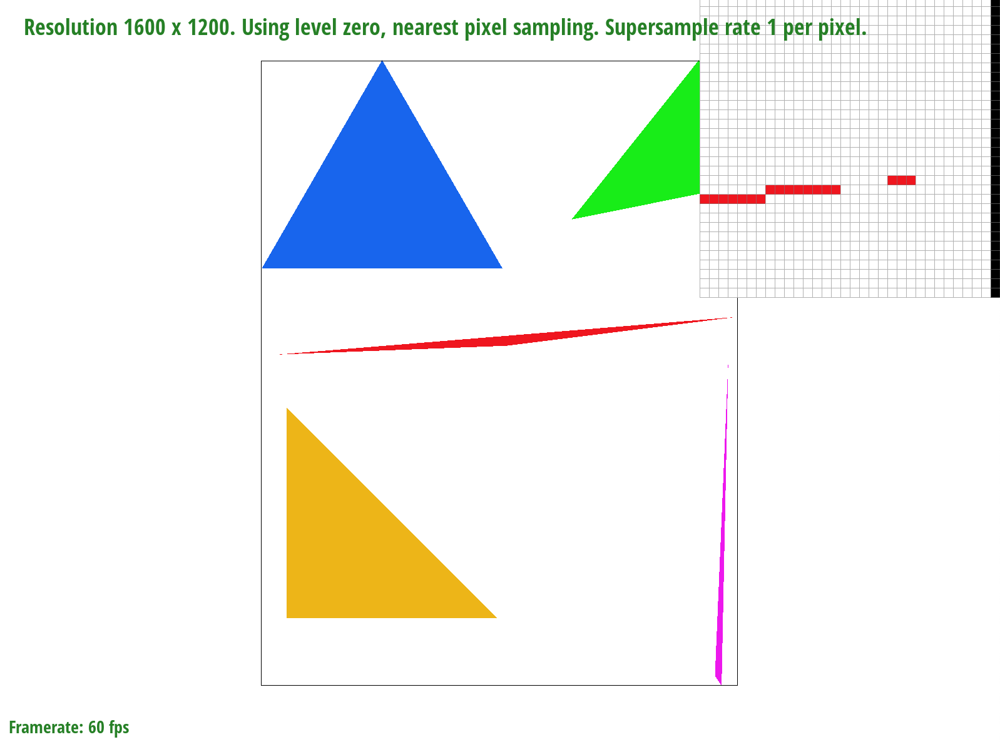
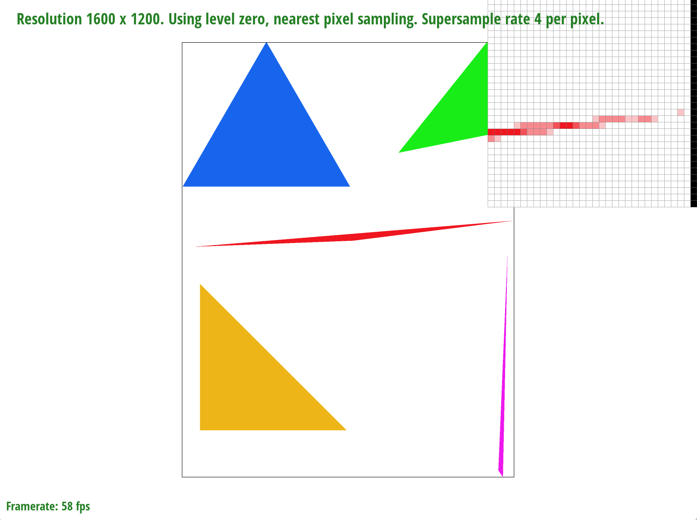
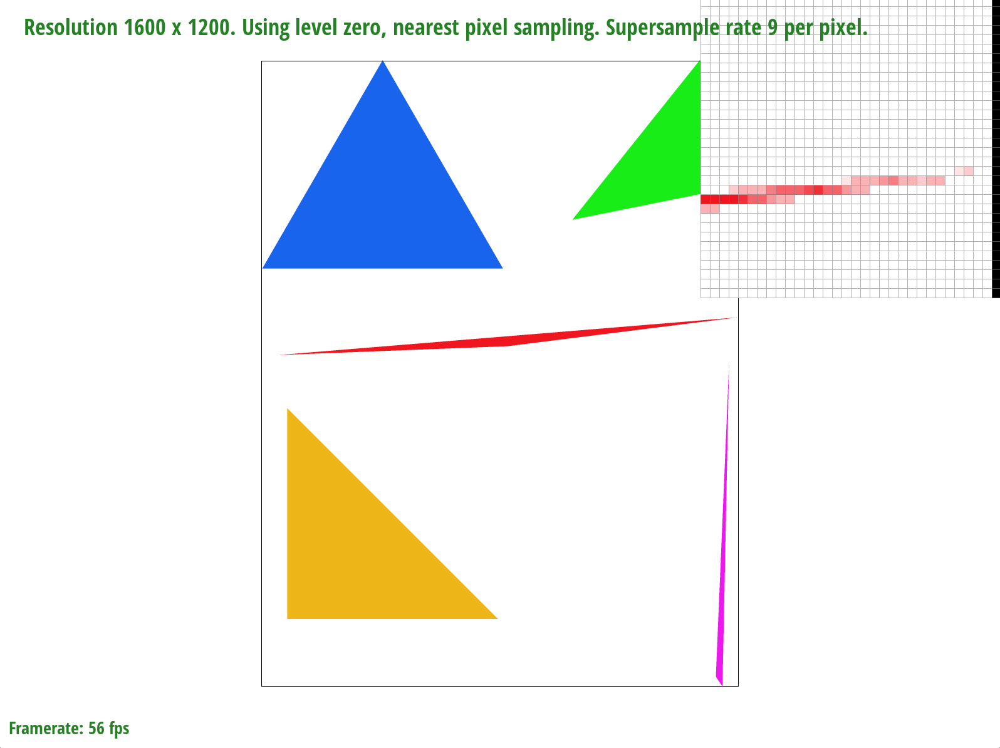
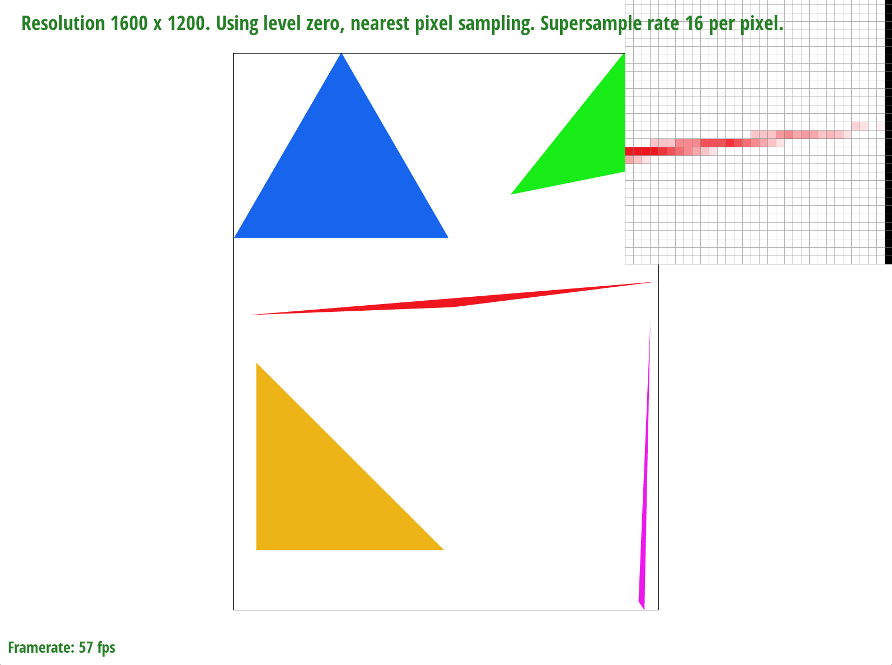
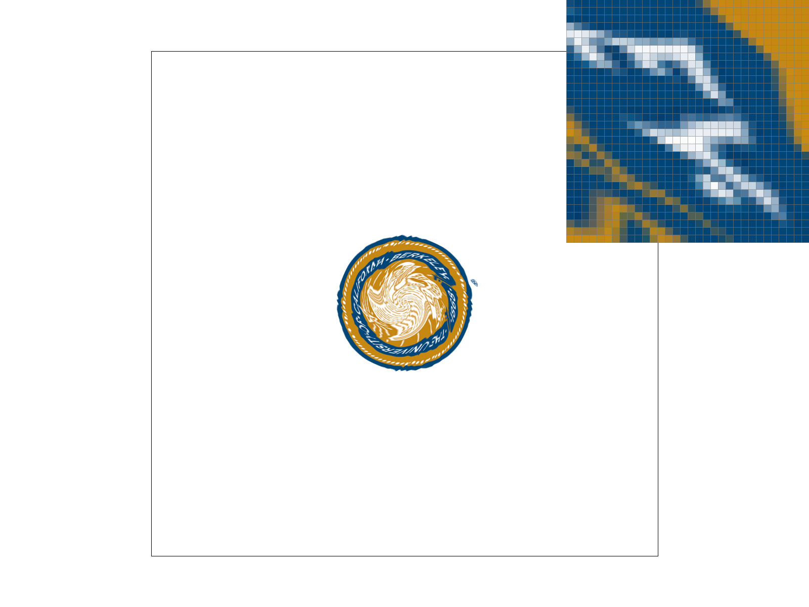
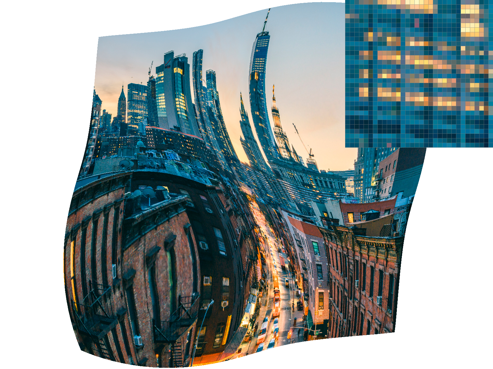
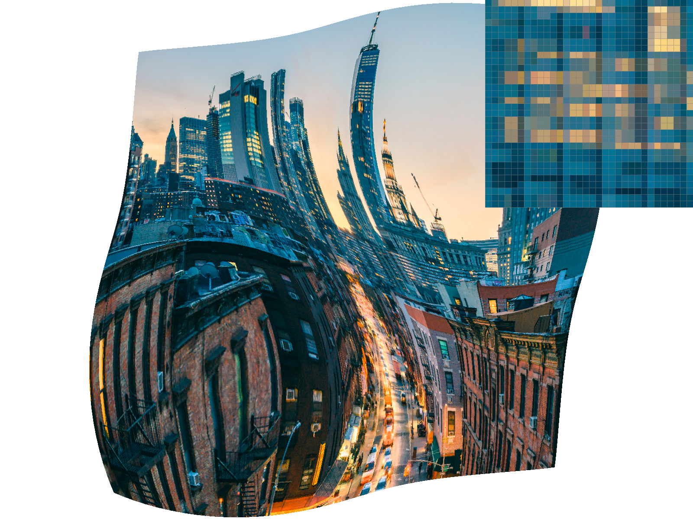

Overview
Give a high-level overview of what you implemented in this project. Think about what you've built as a whole. Share your thoughts on what interesting things you've learned from completing the project.
Section I: Rasterization
Part 1: Rasterizing single-color triangles
In order to rasterize triangles, I first calculate the bounding box for the triangle. I do this by finding the highest/lowest x and y coordinates out of the three points (for a total of 4 values). I then have a double for loop, starting at the lowest x and looping until the highest x in the outer for loop, and starting at the lowest y and looping until the highest y in the inner for loop. I also make sure to floor() the min values and ceil() the upper values to make sure all the edges are taken care of. Within the loop, I perform the line tests on every x and y pair ( + 0.5 to each) and if they're all >= 0 or all <= 0, then I fill in that pixel. If they're out of bounds, then I skip over that pair.
My unoptimized algorithm is no worse than one that checks each sample within the bounding box of the triangle because it does exactly that - check each sample within the bounding box of the triangle.
In order to optimize my algorithm, I tried a different triangle traversal algorithm. What I do is start at the highest point, fill in pixels to the left until I hit a pixel that doesn't need to be filled in, then go back to my starting point and fill in pixels to the right until I hit a pixel that doesn't need to be filled in. I then go to the leftmost x coordinate that was filled in and go down one y coordinate. I then traverse left and fill in pixels until I hit the outer edge and then go back to my starting point and traverse right. One edge case was that for really skinny triangles that have a high point and then two lower points way off to the left or right, it was possible that after going down one y coordinate, I would no longer be inside the triangle. In order to deal with this edge case, I would keep traversing left until I hit the edge of the bounded box or the triangle. If I hit the edge of the bounded box, I would terminate, then start traversing right. If I hit the edge of the triangle, I would keep filling in pixels until I hit the left edge, then terminate. A similar algorithm is applied for the rightwards traversal. With this algorithm, in the worst case scenario like in the case with the skinny triangle I described above where I traverse until I hit the edge of the bounded box, I end up traversing most of the bounded box anyways. However, for the scenarios where the triangle is wide and I always stay inside the triangle when moving my y coordinate down, I only need to traverse the insides of the triangle, thus cutting the runtime a decent amount. Below is a table comparing sample draw times between my two algorithms for the various tests.
| Test Name | Unoptimized Draw Time | Optimized Draw Time |
|---|---|---|
| test3 | 0.0393209 | 0.0158072 |
| test4 | 0.00172068 | 0.000973995 |
| test5 | 0.00548914 | 0.00425002 |
| test6 | 0.00273258 | 0.00175851 |
It's worth noting that times did tend to vary wildly across multiple runs, and there were a few instances where the optimized verison performed worse than the unoptimized version. However, on average, the optimized algorithm did have noticable speedups compared to the unoptimized version.
Part 2: Antialiasing triangles
My supersampling algorithm first required changes to the sample_buffer. Instead of having a sample buffer with width * height elements, I now had a buffer with width * height * sample_rate elements. This allowed me to store one color in the sample buffer for every single sample I took. For the algorithm itself, the outer 2 loops were fairly similar to the original algorithm where I created a bounded box then iterated through every individual pixel. However, for each pixel, I had another double for loop where I iterated through every single sample within the pixel. I would then see if each individual sample within the pixel was within the bounds of the triangle. If it was, then I would store that color in my sample buffer.
My resolve_to_framebuffer function also needed to be changed. Instead of simply assigning a color 1-to-1 from the sample buffer to the rgb framebuffer target, I now needed to collect all the color samples from each individual pixel I stored earlier, add up their RGB values, then divide each RGB value by the sample rate in order to get the average RGB value. After that, the process is the same as before where the RGB values are inputted into the rgb framebuffer target.
|

|

|
|

|

|
Above are screenshots of various sampling rates for basic/test4.svg zoomed in on the edge of the skinny red triangle. We can see that as the sample rate gets higher, the corner of the triangle becomes more and more smooth. This is the case since we're looking at the "true" image at a higher resolution in higher sample rates. Even if a piece of the triangle is only partially in the pixel, if we are able to determine that the center of one of our "sub pixels" is within the boundaries of the triangle, we may be able to capture that piece of the triangle and represent the entire pixel as a lighter shade of color.
Part 3: Transforms
This task involved just filling in the definitions of the various transformation matrices. I played around with the given robot.svg file and created a new image of cubeman waving.
Section II: Sampling
Part 4: Barycentric coordinates
Barycentric coordinates are essentially a set of coordinates specific to determining position within a triangle. There are three parameters, alpha, beta and gamma, and each parameter is associated with a vertex of the triangle. The larger the parameter is, the closer a point is to its associated vertex. For example, if there are vertices A, B, and C defining a triangle and the (alpha, beta, gamma) parameters are (1, 0, 0), then the point lies exactly on the A vertex. In this sense, each parameter is sort of like an inverse distance. In order for the parameters to have some sort of a relationship with each other, all the parameters must add up to 1.
In order to give a more intuitive meaning to the parameters, we can create a triangle where one vertex is assigned blue, one vertex assigned red, and one vertex assigned green. Then at each point in the triangle, we can multiply that point's alpha, beta, and gamma parameters by their respective color and then sum them up in order to determine the color for that point. For example, let's say that vertex alpha has the color blue and vertex beta has the color red. Then points on those vertices will be their associated colors, but points directly between them will be combinations of blue and red with points closer to vertex alpha being more blue and points closer to vertex beta being more red. This makes sense as points closer to vertex alpha will have a higher alpha value and a lower beta value and therefore when we multiply the alpha parameter with a solid blue color and the beta parameter with a solid red color and then combine them, we'll get a bluer color. A similar argument can be made for points closer to vertex beta than vertex alpha. When we take into account the third vertex, vertex gamma, and assign it the color green, then we can get all possible colors as points can be combinations of various magnitudes of red, green, and blue.
Through the use of many triangles and various colors to serve as vertices, images with complex color gradients can be created.

Part 5: "Pixel sampling" for texture mapping
In pixel sampling, every point in the 2D plane (x, y) is mapped to a texture coordinate (u, v). We can then convert our (x, y) coordinates into barycentric coordinates, then use barycentric interpolation on the texture coordinates of the triangle in the texture plane to determine the cooresponding texture coordinate in the texture plane. Then using this interpolated texture coordinate, we'll be able to go into the texture map and using some sort of sampling method, determine a color for the pixel in the 2D plane.
The two sampling methods we've implemented are nearest and bilinear. Nearest pixel sampling simply takes in the interpolated coordinates (which are likely not integers) and rounds them to the nearest coordinate in the texture map, and uses the color at that nearest coordinate. Bilinear pixel sampling uses a more involved technique where the four nearest pixels are used to perform two separate linear interpolations and then a final linear interpolation between the two linear interpolations that were just done. This results in a final color that's an average of the four nearest pixels' colors, but with an emphasis on the colors of the nearer pixels.
|
|
|
|
|

|
As can be seen in the above figures, bilinear sampling tends to create a "smoother" image than nearest sampling, although the effect is less noticeable when sampling at higher rates. There will tend to be a large discrepancy between the images when looking at places where there are edges with changes in color. Bilinear sampling will average out the colors at the edges to make the transition from one color to another smoother, while nearest sampling will have more blocky effects.
Part 6: "Level sampling" with mipmaps for texture mapping
Level sampling is basically where different parts of the image should be represented with different "levels" of resolution depending on the screen sampling rate of that part of the image. With this method, we can reduce aliasing and blurring in images that would've had higher amounts of aliasing/blurring had we used a single resolution for the entire image. In my code, level sampling was implemented by first calculating (du/dx, dv/dx) and (du/dy, dv/dy) via calculating the barycentric coordinates of (x, y), (x+1, y), and (x, y+1) for (x, y) coordinates that are within the triangle we're rasterizing. We then determine our level based on what kind of level sampling method we're using. If it's L_ZERO, then it's just level 0. If it's L_NEAREST, then I first calculate the continuous level value by calculating the distance vectors, scaling them up accordingly by the width and height of the full-resolution texture image, and then taking the max of the norm of the derivatives with respect to x and the derivatives with respect to y. I then take the log base 2 of that value to get the final continues level value. Afterwards, I round the level value to the nearest int and use that. For L_LINEAR, I do the same process in calculating the continuous level value, then use linear interpolation on the two nearest levels to the level value we calculated to create a linear interpolation between levels.
There are definitely performance tradeoffs when using the different sampling techniques. When changing the level, using only level 0 is the quickest, then nearest level, then finally bilinear level. Memory usage is the same across all levels since the mipmap is generated for all levels either way. In terms of aliasing power, level 0 has the least and bilinear has the most. When doing either nearest pixel sampling or bilinear pixel sampling, nearest pixel sampling is a bit faster as it doesn't need to do linear interpolation calculations. The memory usage across these two methods is also the same as bilinear pixel sampling isn't storing any additional data, just doing more calculations. Bilinear pixel sampling tends to have higher aliasing power than nearest pixel sampling. Supersampling's speed tends to go down the more samples we take per pixel. Additionally, the more samples we take per pixel, the higher the memory usage is as now we need to store the color of each "subpixel" within each pixel. However, like with the previous two techniques, the more expensive the method (eg. the higher the sampling rate), the higher the aliasing power.
|

|
|
|

|
|
In the above images of a texture mapped New York City, I've zoomed in on the windows of a skyscraper in the far back left. We can see that with level 0 sampling and nearest pixel sampling, the image is quite blocky. However, if we use bilinear pixel sampling with level 0 level sampling, the image becomes a little bit smoother. When we change to using nearest level sampling with nearest pixel sampling, a lot of the dark spots go away, however there still some visible aliasing artifacts. Finally, when we combine nearest level sampling with bilinear pixel sampling, we get the smoothest result.
Section III: Art Competition
If you are not participating in the optional art competition, don't worry about this section!